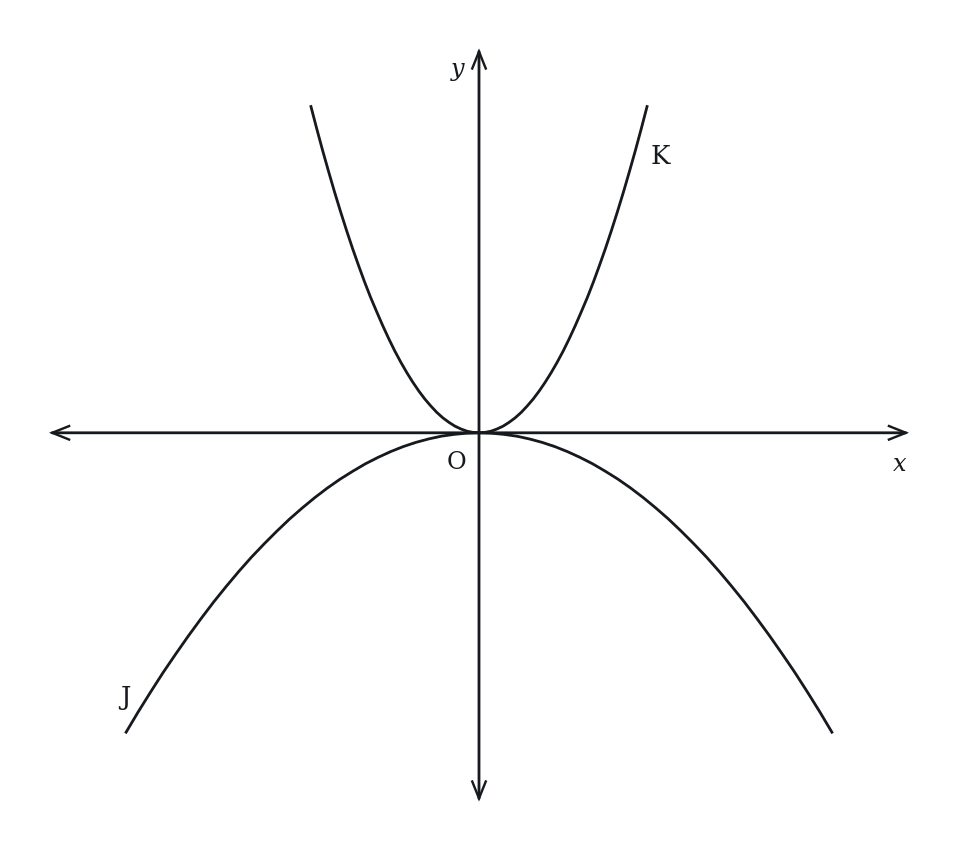

Parabolas & Quadratic Graphs — Practice Set
Bank code: COG-GQF · Section: Coordinate Geometry · 30 questions — Easy 7 · Medium 16 · Hard 7
The vertex sits at x = -b/(2a) and the y-intercept is c; the discriminant counts the x-intercepts, so tangency means it is zero.
Every question below is live in the question bank under the ID shown — the sheet and the portal are the same questions. Attempt a level with the clock running, then check Part C.
Part A — Questions
Quantitative Comparison — the four choices are always the same, so they are not reprinted: (A) Quantity A is greater · (B) Quantity B is greater · (C) The two quantities are equal · (D) The relationship cannot be determined from the information given
Level 1 · Easy — 7 questions · ~6 min
warm-up — these must be automatic
Q1 · COG-GQF-001 · MCQ · 40s
What is the y-intercept of the parabola y = 3x² − 7x + 5?
(A) −7
(B) 3
(C) 5
(D) 7
(E) 15
Q2 · COG-GQF-003 · MCQ · 50s
What is the axis of symmetry of the parabola y = x² − 6x + 8?
(A) x = −3
(B) x = 3
(C) y = 3
(D) x = 6
(E) x = −6
Q3 · COG-GQF-005 · Numeric Entry · 50s
The parabola y = 2x² − 4x + 6 has its vertex at x = k. What is the value of k?
Numeric entry — write the number.
Q4 · COG-GQF-006 · MCQ · 55s
How many x-intercepts does the parabola y = x² + 4x + 4 have?
(A) 0
(B) 1
(C) 2
(D) 3
(E) 4
Q5 · COG-GQF-008 · MCQ · 60s
The parabola y = x² − 5x + 6 crosses the x-axis at two points. What are the x-intercepts?
(A) x = 1 and x = 6
(B) x = 2 and x = 3
(C) x = −2 and x = −3
(D) x = −1 and x = 6
(E) x = 2 and x = −3
Q6 · COG-GQF-010 · MCQ · 50s
How many real solutions does the equation x² + 2x + 5 = 0 have?
(A) 0
(B) 1
(C) 2
(D) 3
(E) Infinitely many
Q7 · COG-GQF-018 · Numeric Entry · 55s
The parabola y = −x² + 4x + k passes through the origin (0, 0). What is the value of k?
Numeric entry — write the number.
Level 2 · Medium — 16 questions · ~22 min
two or three steps, one planted trap each
Q8 · COG-GQF-011 · MCQ · 75s
The vertex of the parabola y = 2x² − 8x + 3 is at point (h, k). What is the value of k?
(A) −11
(B) −8
(C) −5
(D) 3
(E) 4
Q9 · COG-GQF-012 · QC · 70s
y = x² − 4x + 7
Quantity A: The minimum value of y Quantity B: 3
Q10 · COG-GQF-013 · MCQ · 80s
A ball is thrown upward. Its height in feet after t seconds is given by h(t) = −16t² + 64t + 5. What is the maximum height reached by the ball?
(A) 5 feet
(B) 64 feet
(C) 69 feet
(D) 75 feet
(E) 85 feet
Q11 · COG-GQF-014 · Numeric Entry · 75s
The parabola y = x² + bx + 16 has exactly one x-intercept. If b > 0, what is the value of b?
Numeric entry — write the number.
Q12 · COG-GQF-015 · QC · 60s
The parabola y = 3x² − 12x + 7.
Quantity A: The x-coordinate of the vertex Quantity B: 2
Q13 · COG-GQF-017 · MCQ · 70s
The graph of y = a(x + 2)² − 5 passes through the point (0, 3). What is the value of a?
(A) −2
(B) −1
(C) 1
(D) 2
(E) 4
Q14 · COG-GQF-019 · QC · 80s
Parabola P: y = 2x² − 8x + 9
Quantity A: The y-coordinate of the vertex of P Quantity B: The y-intercept of P
Q15 · COG-GQF-020 · MCQ · 75s
The profit P (in hundreds of dollars) from selling x units of a product is P = −x² + 10x − 16. How many units should be sold to maximize profit?
(A) 4
(B) 5
(C) 6
(D) 8
(E) 10
Q16 · COG-GQF-022 · MCQ · 85s
The graph of y = x² + 6x + c in the xy-plane has no x-intercepts. Which of the following could be the value of c?
(A) −9
(B) 3
(C) 6
(D) 9
(E) 10
Q17 · COG-GQF-028 · QC · 95s
The parabolas y = x² − 4x + 3 and y = −x² + 4x − 3 intersect at two points.
Quantity A: The x-coordinate of the midpoint between the two intersection points Quantity B: 2
Q18 · COG-GQF-036 · MCQ · 95s
The graph of y = f(x) is a parabola with vertex at (2, −3) and passes through (0, 5). Which of the following is f(x)?
(A) f(x) = 2(x − 2)² − 3
(B) f(x) = −2(x − 2)² − 3
(C) f(x) = 2(x + 2)² − 3
(D) f(x) = 3(x − 2)² − 3
(E) f(x) = (x − 2)² − 3
Q19 · COG-GQF-039 · QC · 125s
For constants a, b, c with a > 0 and b² − 4ac < 0, the parabola y = ax² + bx + c lies entirely above the x-axis.
Quantity A: The number of distinct real values of x satisfying ax² + bx + c = 0 Quantity B: The number of distinct real values of x satisfying ax² + bx + c = −1
Q20 · COG-GQF-KMF-002 · MCQ · 70s
Which of the following correctly describes the parabola in the xy-plane given by y = -(x + 3)^2 + 4?
(A) Opens upward; vertex at (-3, 4); never crosses the x-axis
(B) Opens upward; vertex at (3, -4); crosses the x-axis at x = 1 and x = 5
(C) Opens downward; vertex at (-3, -4); never crosses the x-axis
(D) Opens downward; vertex at (3, 4); crosses the x-axis at x = 1 and x = 5
(E) Opens downward; vertex at (-3, 4); crosses the x-axis at x = -5 and x = -1
Q21 · COG-GQF-KMF-003 · Select all that apply · 110s
The parabola given by y = -(x - 4)^2 + 7 is drawn in a coordinate plane.
Which of the following statements about this parabola are true? Select all that apply.
(A) Its highest point is (4, 7).
(B) The point (0, -9) lies on it.
(C) It is symmetric about the vertical line x = -4.
(D) The point (4, -7) lies on it.
(E) It crosses the x-axis at two points, both to the right of the y-axis.
F. Every point of it lies below the x-axis.
Q22 · COG-GQF-KMF2-001 · QC · 80s
In the xy-plane above, parabola J is the graph of y = cx^2 and parabola K is the graph of y = dx^2, where c and d are constants.
Quantity A: c Quantity B: d

Q23 · COG-GQF-KMF2-002 · QC · 85s
In the xy-plane, the graph of y = 2x^2 + bx + 9, where b is a constant, passes through two points that have the same y-coordinate, one with x-coordinate 4 and the other with x-coordinate -2.
Quantity A: b Quantity B: -3
Level 3 · Hard — 7 questions · ~13 min
where 162+ is won or lost
Q24 · COG-GQF-029 · Numeric Entry · 100s
The parabola y = x² − 6x + c is tangent to the x-axis (touches it at exactly one point). This same parabola passes through the point (7, p). What is the value of p?
Numeric entry — write the number.
Q25 · COG-GQF-031 · QC · 100s
f(x) = −3x² + 12x − 5
g(x) = 2x² − 8x + 11
Quantity A: The maximum value of f(x) Quantity B: The minimum value of g(x)
Q26 · COG-GQF-033 · MCQ · 105s
The parabola y = x² + bx + c has its vertex on the line y = x. If the axis of symmetry is x = 3, what is the value of c?
(A) 0
(B) 3
(C) 6
(D) 9
(E) 12
Q27 · COG-GQF-035 · QC · 110s
The parabola y = x² − 6x + 5 and the horizontal line y = m intersect at two points with x-coordinates x₁ and x₂ (x₁ < x₂).
Quantity A: x₂ − x₁ Quantity B: 4
Q28 · COG-GQF-037 · MCQ · 120s
Let f(x) = ax² + bx + c where a > 0. The line segment connecting the y-intercept of y = f(x) to its vertex has slope −1. The axis of symmetry is x = 3 and the y-intercept is 13. What is the minimum value of f(x)?
(A) 4
(B) 7
(C) 10
(D) 13
(E) 16
Q29 · COG-GQF-038 · Numeric Entry · 125s
The parabola y = x² − 10x + k and the line y = 2x − 3 are tangent to each other (they intersect at exactly one point). What is the value of k?
Numeric entry — write the number.
Q30 · SEC-CG-048 · MCQ · 110s
In the xy-plane, the graph of y = (x^2 + 6)(2x - 7) intersects the x-axis at exactly one point. What is the x-coordinate of that point?
(A) -6
(B) -3.5
(C) 0
(D) 3.5
(E) 6
The rest of this sheet is part of Pro
All 30 questions, the answer key and full worked solutions with every trap named — plus 75 concept notes and 5,868 questions.